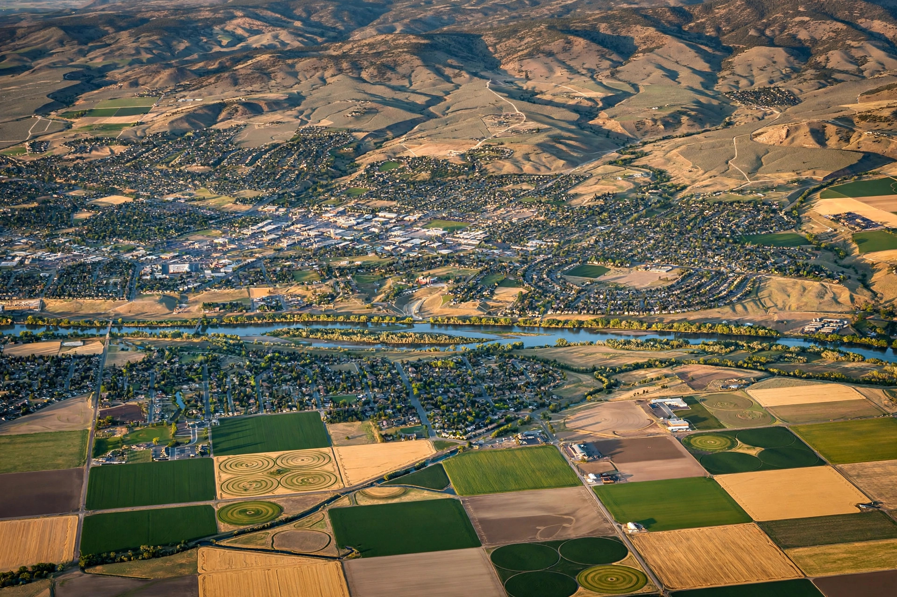

Home / About
About this site
Plain answers about mold and water damage in the Treasure Valley
Mold Inspection Boise exists so homeowners in Boise, Meridian, Nampa, Caldwell, Eagle, Kuna and Star can understand what they’re looking at — and reach local help any hour of the day.
What we do
This site explains the causes, warning signs and typical process for ten specific mold and water problems, written around how homes are actually built here — from North End crawlspaces to brand-new Kuna subdivisions.
When you call or send a request, you’re connected with a local provider for an inspection. Nothing is agreed or priced until someone has seen the problem in person.
How we write our guides

Have a question about your home?
Open 24 hours.